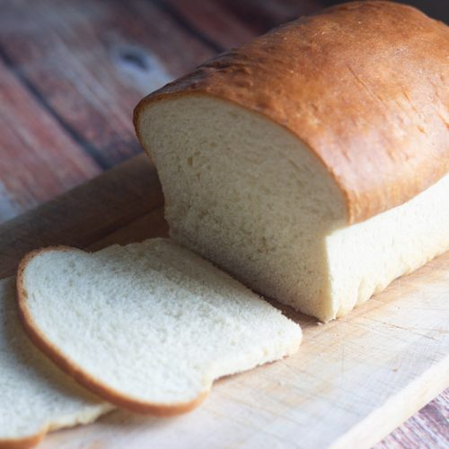

Basic White Bread

No word of a lie, this is THE BEST White Bread recipe on the internet. If you’ve been looking for it, then look no further…
Ingredients
- 3 cups all-purpose flour
- 1 tablespoon sugar
- 1 tablespoon active dry yeast
- 1 teaspoon salt
- 1 cup warm water
- 2 tablespoons vegetable oil
Instructions:
- In a large bowl, combine flour, sugar, yeast, and salt. Stir in water and oil until dough forms.
- Knead dough on a lightly floured surface for 6-8 minutes or until smooth and elastic.
- Place dough in a greased bowl, turning once to grease top. Cover and let rise in a warm place until doubled, about 1 hour.
- Punch down dough. Shape into a loaf and place in a greased 9x5 inch loaf pan. Cover and let rise until doubled, about 30 minutes.
- Bake at 375°F (190°C) for 30-35 minutes or until golden brown. Remove from pan and cool on wire rack.
Print Recipe
Whole Wheat Bread
No word of a lie, this is THE BEST Whole Wheat Bread recipe on the internet. If you’ve been looking for it, then look no further…
Ingredients
- 2 cups whole wheat flour
- 1 cup all-purpose flour
- 1 tablespoon sugar
- 1 tablespoon active dry yeast
- 1 teaspoon salt
- 1 cup warm water
- 2 tablespoons vegetable oil
Instructions:
- In a large bowl, combine whole wheat flour, all-purpose flour, sugar, yeast, and salt. Stir in water and oil until dough forms.
- Knead dough on a lightly floured surface for 6-8 minutes or until smooth and elastic.
- Place dough in a greased bowl, turning once to grease top. Cover and let rise in a warm place until doubled, about 1 hour.
- Punch down dough. Shape into a loaf and place in a greased 9x5 inch loaf pan. Cover and let rise until doubled, about 30 minutes.
- Bake at 375°F (190°C) for 30-35 minutes or until golden brown. Remove from pan and cool on wire rack.
Print Recipe